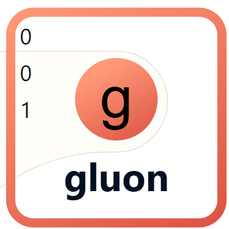

< Back
The gluon is an enabler of one of the four fundamental forces in the Standard Model of particle physics. It is the carrier particle for the strong nuclear force, which binds quarks together to form protons and neutrons.

Gluons are unique because they themselves carry color charge, unlike other force carriers which are electrically neutral.